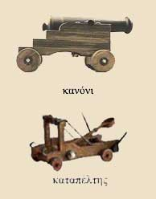

| Η πολιορκία του κάστρου  Τα ψηλά τείχη, οι πύργοι, οι πολεμίστρες και η βαθιά περιμετρική τάφρος, καθιστούσαν δύσκολη την άλωση του κάστρου. Για το λόγο αυτό πολλές φορές οι πολιορκητές κατέφευγαν στη μέθοδο του μακροχρόνιου αποκλεισμού, έτσι ώστε να εξαναγκάσουν τους αμυνόμενους να παραδοθούν. Όταν επέλεγαν την επίθεση, χρησιμοποιούσαν τον πολιορκητικό κριό για την καταστροφή της κεντρικής πύλης, τον καταπέλτη και τα κανόνια για το γκρέμισμα των τειχών, τη βαλλίστρα και τα τόξα κατά των πολιορκημένων. Σκάλες και ξύλινοι πύργοι χρησίμευαν για την αναρρίχησή τους στα τείχη. Στις επάλξεις των τειχών οι υπερασπιστές του κάστρου με βέλη, βλήματα και καυτό νερό προσπαθούσαν να αποκρούσουν τις επιθέσεις. Στην άμυνα του κάστρου συμμετείχαν και οι κάτοικοι της υπαίθρου που κατέφευγαν εκεί, για να σωθούν. |
||